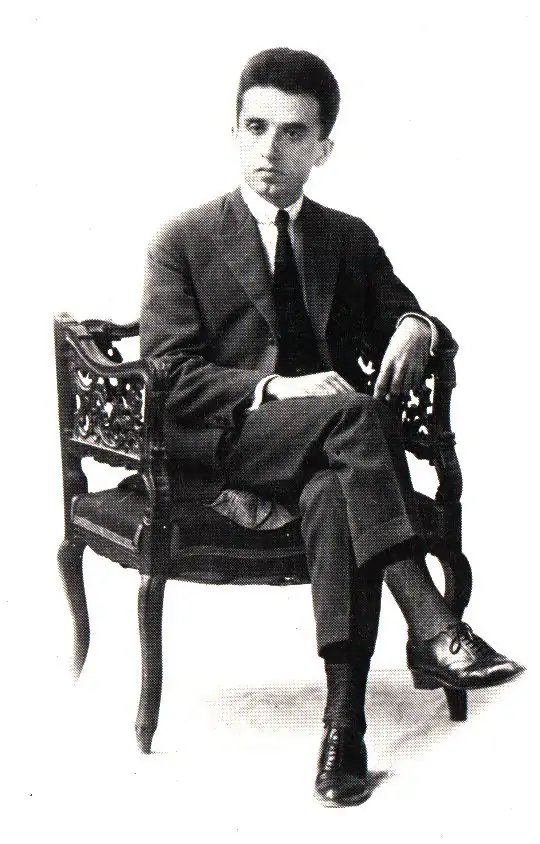

<body>
  <p style="font-size:2vw;">
    Ο Κώστας Καρυωτάκης (30 Οκτωβρίου 1896 [π.η.] - 21 Ιουλίου 1928) ήταν Έλληνας ποιητής και πεζογράφος.Ποιητής και πεζογράφος, ίσως η σημαντικότερη λογοτεχνική φωνή, που ανέδειξε η γενιά του '20 και από τους πρώτους, που εισήγαγαν στοιχεία του μοντερνισμού στην ελληνική ποίηση. Επηρέασε πολλούς από τους κατοπινούς ποιητές (Σεφέρης, Ρίτσος, Βρεττάκος) και με την αυτοκτονία του δημιούργησε φιλολογική μόδα, τον Καρυωτακισμό, που πλημμύρισε τη νεοελληνική ποίηση.
  </p>
  
</body>